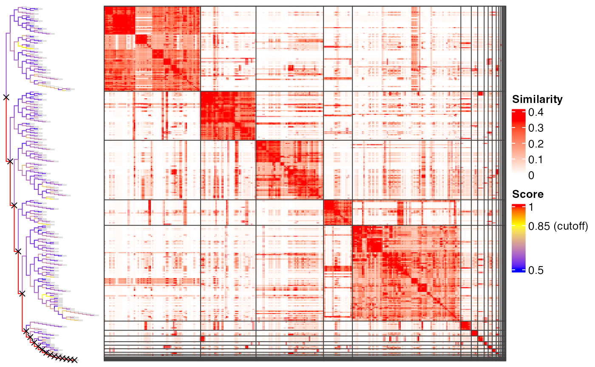
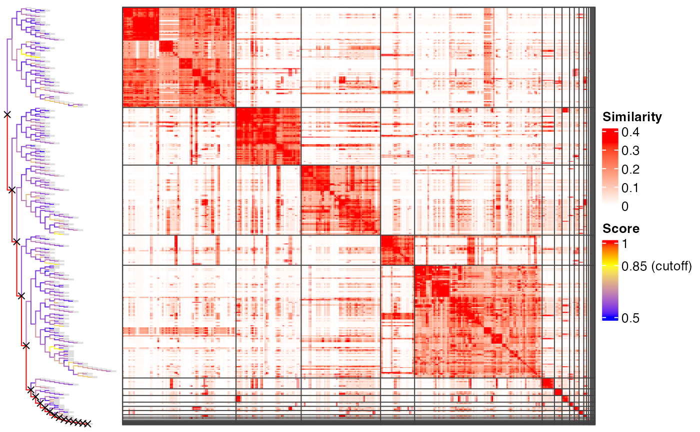

Cluster functional terms by recursively binary cutting the similarity matrix
Source:R/binary_cut.R
binary_cut.RdCluster functional terms by recursively binary cutting the similarity matrix
Usage
plot_binary_cut(
mat,
value_fun = area_above_ecdf,
cutoff = 0.85,
partition_fun = partition_by_pam,
dend = NULL,
dend_width = unit(3, "cm"),
depth = NULL,
show_heatmap_legend = TRUE,
...
)
binary_cut(
mat,
value_fun = area_above_ecdf,
partition_fun = partition_by_hclust,
cutoff = 0.85,
try_all_partition_fun = TRUE,
partial = nrow(mat) > 1500
)Arguments
- mat
A similarity matrix.
- value_fun
A function that calculates the scores for the four submatrices on a node.
- cutoff
The cutoff for splitting the dendrogram.
- partition_fun
A function to split each node into two groups. Pre-defined functions in this package are
partition_by_kmeanspp(),partition_by_pam()andpartition_by_hclust().- dend
A dendrogram object, used internally.
- dend_width
Width of the dendrogram on the plot.
- depth
Depth of the recursive binary cut process.
- show_heatmap_legend
Whether to show the heatmap legend.
- ...
Other arguments.
- try_all_partition_fun
Different
partition_funmay give different clusterings. If the vaule oftry_all_partition_funis set toTRUE, the similarity matrix is clustered by three partitioning method:partition_by_pam(),partition_by_kmeanspp()andpartition_by_hclust(). The clustering with the highest difference score is finally selected as the final clustering.- partial
Whether to generate the complete clustering or the clustering stops when sub-matrices cannot be split anymore.
Details
After the functions which perform clustering are executed, such as simplifyGO() or
binary_cut(), the dendrogram is temporarily saved and plot_binary_cut() directly
uses this dendrogram.
Examples
# \donttest{
mat = readRDS(system.file("extdata", "random_GO_BP_sim_mat.rds",
package = "simplifyEnrichment"))
plot_binary_cut(mat, depth = 1)
#> create a new dendrogram.
 plot_binary_cut(mat, depth = 2)
#> use the cached dendrogram.
plot_binary_cut(mat, depth = 2)
#> use the cached dendrogram.
 plot_binary_cut(mat)
#> use the cached dendrogram.

# }
mat = readRDS(system.file("extdata", "random_GO_BP_sim_mat.rds",
package = "simplifyEnrichment"))
binary_cut(mat)
#> [1] 1 2 3 4 5 4 4 4 1 3 3 5 1 5 1 4 1 4 5 4 5 1 4 3 6
#> [26] 3 7 4 3 1 1 3 8 7 3 3 5 1 4 4 5 2 4 9 5 1 1 7 3 7
#> [51] 5 3 10 7 1 7 3 10 3 3 7 1 5 5 3 1 1 1 1 3 1 4 11 3 1
#> [76] 3 4 7 3 3 1 5 4 6 3 3 1 5 4 5 7 3 3 4 5 3 1 1 4 6
#> [101] 4 3 4 4 1 4 3 5 3 7 3 1 3 3 3 1 1 1 9 4 4 12 3 1 1
#> [126] 1 1 5 4 1 4 1 3 5 5 5 1 5 3 5 5 5 1 3 5 5 13 1 2 4
#> [151] 12 3 7 1 3 5 6 1 4 5 1 5 1 1 5 3 3 4 1 1 3 3 3 1 4
#> [176] 4 1 3 4 3 3 14 5 4 4 3 1 3 5 3 5 3 3 3 1 1 1 5 4 3
#> [201] 2 5 4 4 10 3 1 1 3 3 1 2 3 3 3 4 5 3 4 3 4 6 6 4 7
#> [226] 4 5 5 1 1 3 1 6 12 7 7 5 5 3 3 7 3 1 4 1 1 5 6 3 5
#> [251] 5 1 15 1 3 11 4 1 5 13 3 1 7 3 1 5 1 3 5 5 3 6 1 5 3
#> [276] 11 1 2 3 4 5 13 1 1 10 3 5 3 3 3 7 4 5 3 3 4 1 1 4 7
#> [301] 3 2 4 5 3 3 5 3 1 3 2 5 2 3 3 1 1 5 5 4 11 1 1 5 3
#> [326] 3 1 4 5 1 1 1 1 7 3 2 3 2 5 3 5 1 13 3 3 4 3 1 4 6
#> [351] 4 7 1 3 1 4 7 3 5 3 1 2 11 4 3 3 1 1 1 5 7 7 1 1 3
#> [376] 5 3 7 3 10 1 3 1 7 3 1 3 11 3 16 4 6 3 1 3 7 6 1 5 4
#> [401] 5 3 1 3 3 5 3 3 7 4 5 1 7 5 7 3 1 12 3 3 10 1 1 4 3
#> [426] 1 3 13 1 3 3 1 1 5 3 3 1 1 1 1 17 5 1 3 7 3 1 5 1 5
#> [451] 7 3 4 5 4 4 1 1 3 5 7 11 4 4 5 3 4 4 1 1 3 5 12 5 3
#> [476] 3 3 3 5 14 3 3 3 4 1 11 5 1 3 3 1 5 3 1 3 18 7 5 3 1
plot_binary_cut(mat)
#> use the cached dendrogram.

# }
mat = readRDS(system.file("extdata", "random_GO_BP_sim_mat.rds",
package = "simplifyEnrichment"))
binary_cut(mat)
#> [1] 1 2 3 4 5 4 4 4 1 3 3 5 1 5 1 4 1 4 5 4 5 1 4 3 6
#> [26] 3 7 4 3 1 1 3 8 7 3 3 5 1 4 4 5 2 4 9 5 1 1 7 3 7
#> [51] 5 3 10 7 1 7 3 10 3 3 7 1 5 5 3 1 1 1 1 3 1 4 11 3 1
#> [76] 3 4 7 3 3 1 5 4 6 3 3 1 5 4 5 7 3 3 4 5 3 1 1 4 6
#> [101] 4 3 4 4 1 4 3 5 3 7 3 1 3 3 3 1 1 1 9 4 4 12 3 1 1
#> [126] 1 1 5 4 1 4 1 3 5 5 5 1 5 3 5 5 5 1 3 5 5 13 1 2 4
#> [151] 12 3 7 1 3 5 6 1 4 5 1 5 1 1 5 3 3 4 1 1 3 3 3 1 4
#> [176] 4 1 3 4 3 3 14 5 4 4 3 1 3 5 3 5 3 3 3 1 1 1 5 4 3
#> [201] 2 5 4 4 10 3 1 1 3 3 1 2 3 3 3 4 5 3 4 3 4 6 6 4 7
#> [226] 4 5 5 1 1 3 1 6 12 7 7 5 5 3 3 7 3 1 4 1 1 5 6 3 5
#> [251] 5 1 15 1 3 11 4 1 5 13 3 1 7 3 1 5 1 3 5 5 3 6 1 5 3
#> [276] 11 1 2 3 4 5 13 1 1 10 3 5 3 3 3 7 4 5 3 3 4 1 1 4 7
#> [301] 3 2 4 5 3 3 5 3 1 3 2 5 2 3 3 1 1 5 5 4 11 1 1 5 3
#> [326] 3 1 4 5 1 1 1 1 7 3 2 3 2 5 3 5 1 13 3 3 4 3 1 4 6
#> [351] 4 7 1 3 1 4 7 3 5 3 1 2 11 4 3 3 1 1 1 5 7 7 1 1 3
#> [376] 5 3 7 3 10 1 3 1 7 3 1 3 11 3 16 4 6 3 1 3 7 6 1 5 4
#> [401] 5 3 1 3 3 5 3 3 7 4 5 1 7 5 7 3 1 12 3 3 10 1 1 4 3
#> [426] 1 3 13 1 3 3 1 1 5 3 3 1 1 1 1 17 5 1 3 7 3 1 5 1 5
#> [451] 7 3 4 5 4 4 1 1 3 5 7 11 4 4 5 3 4 4 1 1 3 5 12 5 3
#> [476] 3 3 3 5 14 3 3 3 4 1 11 5 1 3 3 1 5 3 1 3 18 7 5 3 1